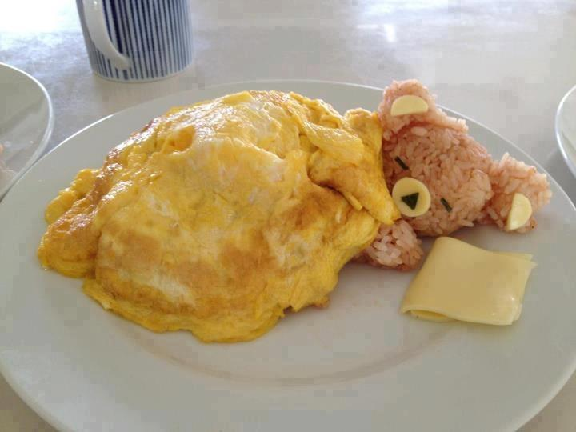

Sleeping Rice Bear with Omelette Blanket

Description
This sleeping rice bear covered by an omelette blanket
looks almost too cute to eat!
With a delicious omelette and rice dish
as the base, a sausage for the body, and cheese,
this dish makes a hearty breakfast.
Prep time for this dish is around 45 minutes (not including
rice cooking time) and requires some cooking experience to make.
Ingredients
- plain omelette (blanket)
- cooked brown rice (bear)
- 1 sausage link (body)
- mozzarella cheese (bear snout)
Steps
- Mold warm rice into balls. Two small balls for the ears and one
larger one for the head. You can also mold an arm if desired. For snout,
you can use either white rice or a small piece of mozzarella cheese.
- Cook your sausage link. Once fully cooked,
place sausage under Teddy bear rice head.
- Cook up omelette. Once done to satisfaction, gently lay atop sausage up
to the “neck”. You can also use a piece of the omelette for the egg. I made this dish again and made a mini pancake as the pillow.
Click to go to the original recipe!
Click to go back to the homepage!